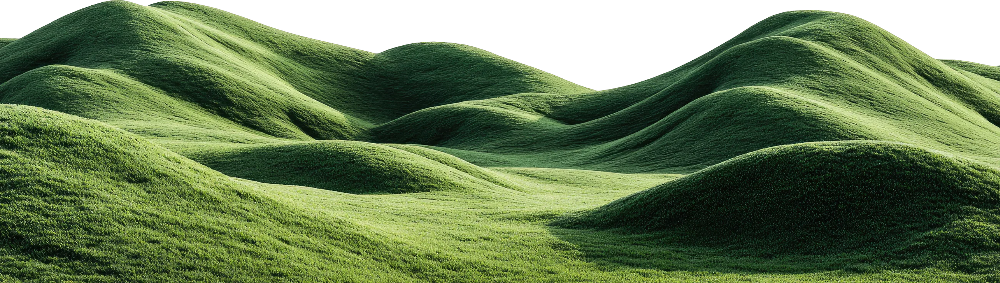

01O problema
O que é a erosão
Erosão é o desgaste do solo pela água e pelo vento. Num terreno exposto, cada chuva arranca e carrega um pouco da terra, até que pequenos caminhos de água se transformam em valas profundas.
Mitigação de erosão e lixiviação

Como a água da chuva abre uma voçoroca e como a técnica da espinha de peixe devolve o controle ao terreno.
01O problema
Erosão é o desgaste do solo pela água e pelo vento. Num terreno exposto, cada chuva arranca e carrega um pouco da terra, até que pequenos caminhos de água se transformam em valas profundas.
02Demanda
03Consequências
04Solução · Drenagem
Direcionamento e controle do escoamento da água pela espinha: curvas de nível seguram a água no alto, e um canal central com ramais laterais a conduz de forma organizada.
05Solução · Proteção do solo
Os canais são revestidos com manta geotêxtil. O solo por onde a água passa fica protegido e a água escoa sem abrir novos sulcos.
06Solução · Contenção
Paliçadas de eucalipto, pedras e matéria orgânica reduzem a força da água no fim de cada ramal e retêm a terra que ela carrega.
07Na prática
Na chuva, a água é desacelerada, direcionada, retida e levada por um caminho de pedras até o reservatório. Quando ele enche, a boia abre a saída para outro reservatório e para a irrigação.
08Viabilidade
09Resultados esperados
“Com a implantação do projeto Ecoprad, esperamos reduzir os impactos da erosão, proteger o solo e contribuir para a recuperação ambiental da área.”
10Conclusão
A equipe Ecoprad busca controlar a erosão e a lixiviação do solo com a técnica espinha de peixe e o uso de geotêxtil, promovendo a retenção da água, a recuperação da vegetação e a sustentabilidade ambiental.
Gire o terreno, compare antes e depois e avance pelas 11 etapas no seu ritmo.
Abrir demonstração 3D